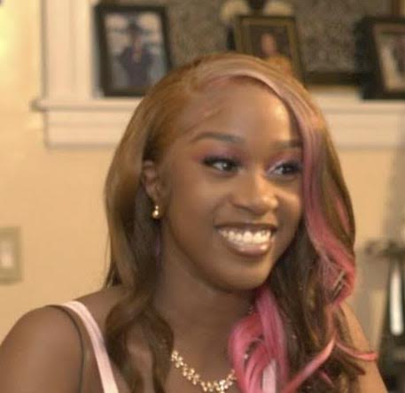

Hello,my name is Christina, I'm in Full Stack Development. My home school is Medgar Evers College preparatory school, I have been interested in Computer Science/Full Stack Development last year, although since I was younger I was always fascinated about computers and how they work, but never really wanted to pursue the career until last year.

I've been working on programming since December of 2022. I made my first ever website also in December when I first started programming, when I let my creative side show and realized I like designing websites. Working on programming has helped me to realize my real passion and talent. I look foward to advancing my Full-Stack Development skills.
Throughout this website you'll see an overall of my interest, my experience, and the recent work.